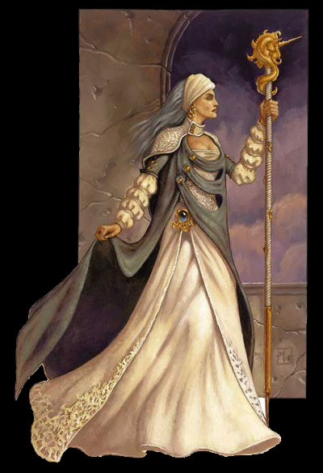

艾拉斯卓.银手
女性人类（密斯拉选民）
20级法师/2级巫师/2级高阶大法师
挑战级别：28
体型：中等体型类人生物（人类）；
生命骰（HD）：20d4+120=162（Forest注：这个HP值对于法师而言算非常厉害了，一般31级的法师总HP才80左右，即使和宠物定了契约也才90左右。伊尔明斯特的HP也有219，当密姐姐的选民实在太好了：体质加10，HP加110-150，外加一大堆的特殊能力..... 555.....我也想加入）
优先加权值：＋7（敏捷修正）
速度：30尺；
防护等级（AC）：23（接触15，措手不及20）；
攻击附加值：＋10/＋5；近身（1d8+6/最大值：19-20）
特殊能力：大法师奥术神化，选民免疫力，选民类法术能力，选民类法术免疫力，体质属性提升，智力属性提升，免疫普通武器攻击，银火；
阵营：无序善良；
豁免判定：坚忍＋11，反射＋8，意志＋19；
属性：
力量11，
敏捷16，
体质23，
智力20，
知觉17，
魅力17；
技能与特技：
物理技巧和精神意识类：
鉴定+8，诈骗+11，手艺+10，交际+10，情报收集+11，胁迫+8，知识（奥秘）＋28，知识（宗教）+10，表演（舞蹈）+8，医护（药品）+ 8，占察+20，搜寻+14（多亏这项技能，布鲁若才捡回一条命），察觉动机＋8，法术知能＋32，手艺（法杖），手艺（魔仗；Forest注：这就是可以直接使用魔法的那种），手艺（神奇物品），铸戒；
魔法奥术类：
集中精神＋33（这个值和体质有关，它越大，则施展法术的时候越不容易被打断），技能强化（法术知能），法术强化（魅惑系），法术强化（塑能系），施法加速，撰写卷轴，无声施法，法术穿透，法术倍效，法术升级。
大法师特殊能力：
大法师奥术神化：抗魔掌控，法术效果+2（增加施术者2个施法等级，并且对目标的豁免判定+2）
选民类法术能力（均为每日1次）：驱魔，看穿隐身，真实视觉，理解语言，看穿意图（这个项技能使艾拉斯卓能轻易看穿别人想干什么....BT啊...）, 定身怪物，分身，多形体（也就是一次以多种形态同时出现），变形，无错传送，找到或造出所需的几乎所有物品（神器除外）
选民免疫力：湮灭、增寿（又是一个BT能力，这项能力使艾拉斯卓能永葆青春）、疾病、毒药、无需睡眠重新使用法术（但并不意味着她可以不用休息重新记忆法术）、
选民法术免疫力（艾拉斯卓可以轻易的免疫并复制以下法术）：伊瓦尔德黑色触手、湮灭、痴愚、石化、迷宫术、闪电、关押术、时间暂停、蛛网；
魔法探测（超自然能力）：视野内；
高阶奖励：4级传奇法师
姓名招控：作为选民，艾拉斯卓有一种特殊能力就是当FR上有人念颂她名号的时候，如果愿意，她就能知道接下来的9个单词
持有物品：+8护甲、防护戒指+2、照明魔杖、免疫侦测护身符、3瓶全愈药剂、艾拉斯卓的剑饰（每天可以将佩戴者的手臂转化为锯齿长剑40分钟，不能豁免）
作为24级的大法师和银月城的领主，艾拉斯卓还拥有很多其它强力物品。
每日可用法师法术：4/6/6/5/5/5/4/3/4/4（施法等级22）
每日可用巫师法术（Sorcerer）：6/5（视为13级Sorcerer）：0级法术：侦测术，解毒术，照明术，魔法师之手，解读术；1级法术：羽落术，语言术；
当艾拉斯卓还是一位叛逆少女时，她唯一的兴趣就是冒险，这些难得的经历使她很早就明白了能和他人分享的事物才是生命中最美好的东西。所以艾拉斯卓不知疲倦的工作，为了她自己的梦想，为了一个不同种族能和平共处的城市，为了一个推崇艺术和知识的福地，银月城，而努力工作着。
从来没有任何事物能使艾拉斯卓产生‘烦恼’或‘生气’等情绪（虽然有时她会为她人民的不幸而落泪），也从来没有人见过艾拉斯卓会因为处理眼前的各种复杂事物而失去她高雅的风度。因为天资聪慧，她能够对所见过的人物的相貌，名字，语音和特点过目而不忘，这些能力使她成为一个理想的统治者。她的智慧，经验和她运用水晶球占卦的能力也使她能够对将要发生的各种事情作出最好的决策。
银月城的民众极为爱戴艾拉斯卓，他们称她为‘希望女士’或‘光耀女士’。艾拉斯卓几乎对所有见过她的人伸出援手，成为他们的密友，她总能在人们最需要帮助的时刻出现。只有不公正和偏激的事情能使她生气，但她从来不会将生气的一面展现在任何人眼前，当她生气时，人们只能从她冷漠的态度和尖锐的言论得知她在生气。她是建设者，管理者，她的成功缘至于能够理解他人体谅他人。
